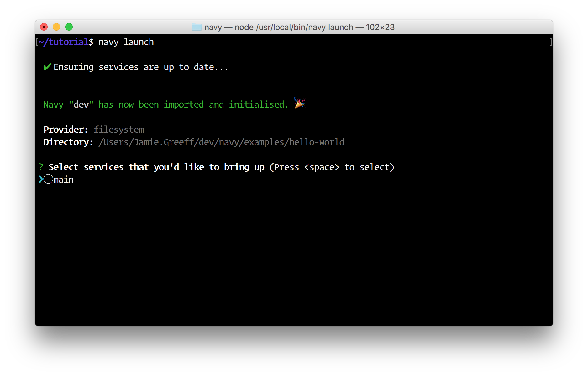
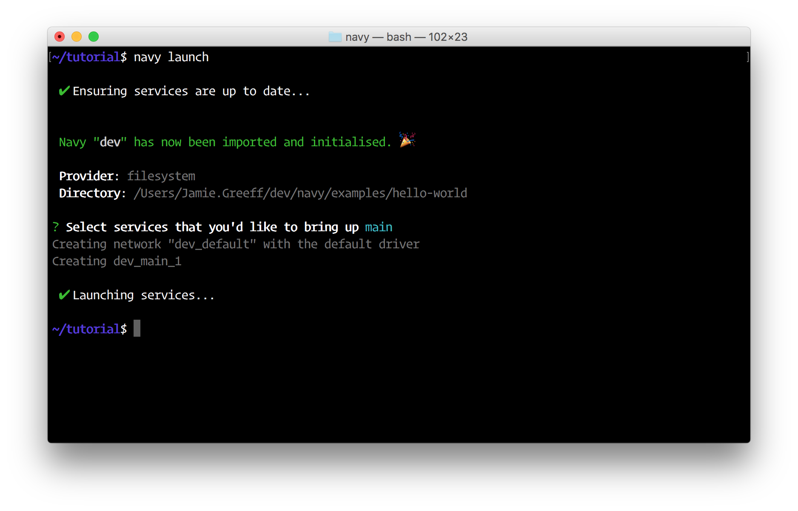
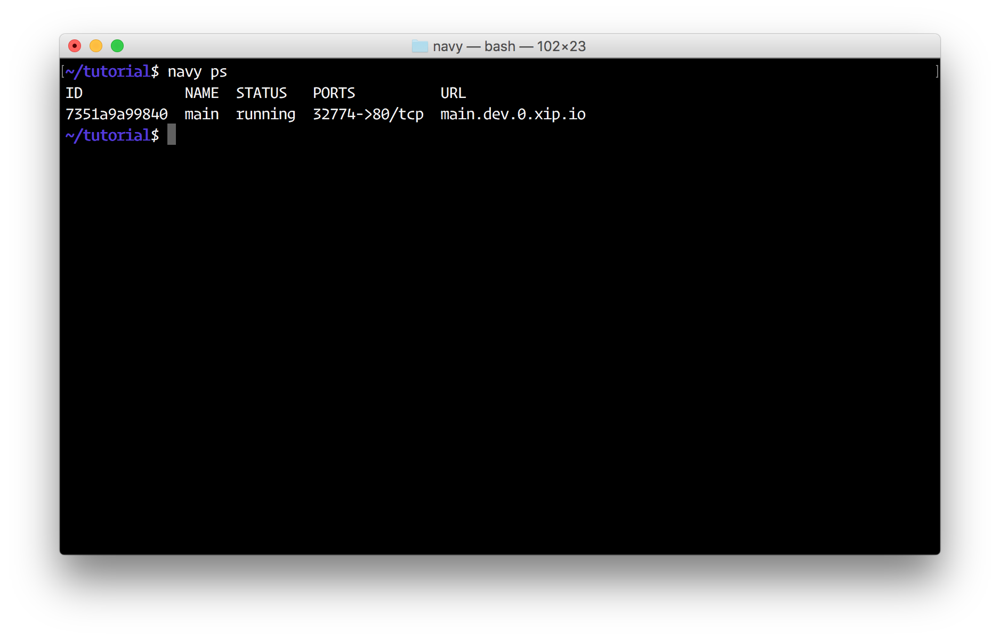
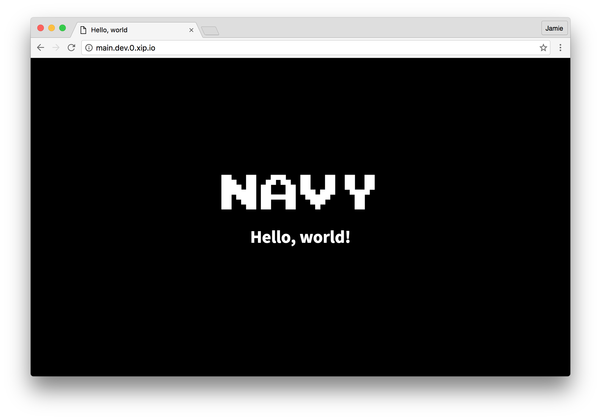

Navy
If you haven't yet got Docker and Docker Compose installed, head over to https://www.docker.com/products/docker.
Make sure you've got at least Docker 1.10.0 installed and Docker Compose 1.7.0:
$ docker -v
Docker version 1.12.1, build 23cf638, experimental
$ docker-compose -v
docker-compose version 1.8.0, build f3628c7
You'll also need NodeJS and NPM. You can get these at https://nodejs.org.
You can install the latest version of Navy easily using NPM:
$ npm install -g navy
Once installed, make sure it's working with:
$ navy --version
2.5.0
To start with, we're going to use the navycloud/hello-world Docker image to get started with Navy.
Create a new file docker-compose.yml with the following:
version: '2'
services:
main:
image: navycloud/hello-world
ports:
- "80"
Now from your terminal run:
$ navy launch

Select the main service to launch by pressing the space bar and then press enter:

Now run navy ps, you should see your service running:

Now open a web browser and go to the URL which navy ps shows (http://main.dev.0.xip.io). You can also just run navy open main as well which will automatically open your browser to the correct URL.

That's the "Hello world" of Navy! Now you'll want to make a docker-compose.yml config file for your own application. It's worth noting a few things at this point before you start exploring Navy though:
When you run navy launch and spin up some services, you've created and launched a "Navy".
Seeing as Navy is designed to make dev lives easier, Navies which are launched are global and can be operated on from any working directory. This is one of the main differences to Docker Compose (You have to be in the same directory as your docker-compose.yml file to use Docker Compose).
When you spin up a Navy, you give it a name which makes it identifiable. By default, Navy uses the name "dev".
If you want to run multiple Navies on your machine at once, you need to change the name of the Navy that you're operating/launching on. See working with multiple Navies for more information.
If you publish port 80 from your service, Navy will automatically provide a URL which you can access the service on without using an IP and random port.
For more information, see the Navy HTTP Proxy.